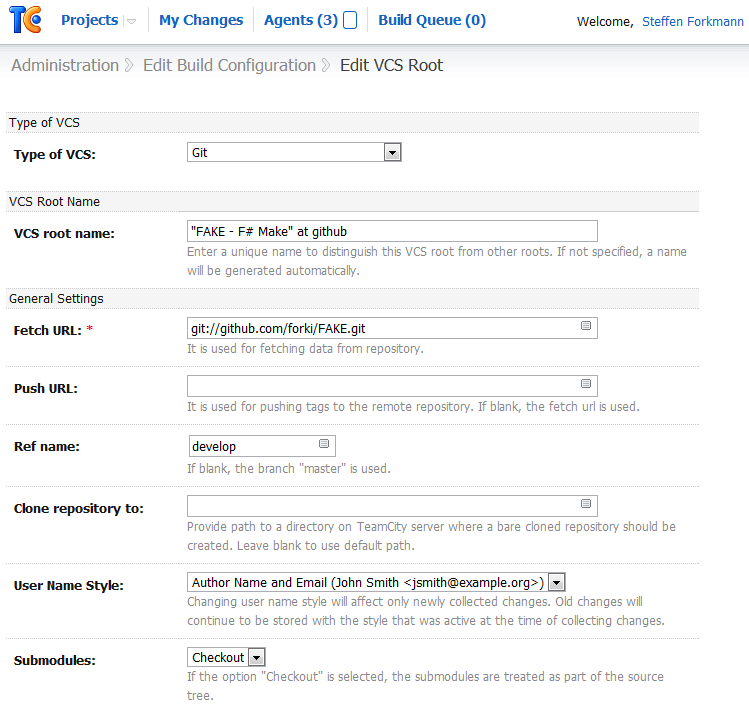

Integrating a FAKE build script into TeamCity
Easy TeamCity integration was one of the major goals for the FAKE build system.
In this article you will learn how to set up a FAKE build script in TeamCity. We will use the CalculatorSample which you can build from the getting started guide.
Installing TeamCity
You can download the free professional edition of TeamCity from http://www.jetbrains.com/teamcity/. After the installation process you should be ready to configure your first build.
Creating a FAKE project on TeamCity
Now create a new project and add a build configuration:
You also need to set the artifacts paths:
Attach a VCS root
The next step is to attach a VCS root. For this sample we will use the official FAKE repository at https://github.com/forki/FAKE/.

Creating the build step
Now is the time to create two build steps. The first one downloads FAKE via Nuget and the second one runs the build script:
If you want you could also add a build trigger to your build script:
Running the build
Now if everything is configured correctly, you can run your build and the output should look like:
You can also inspect the NUnit results: